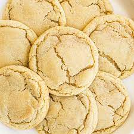

Sugar Cookie

Succulently Sweet Sugar Cookies
Need a midday boost? Grab a couple of these energy filled sugar cookies.
Ingredients
- 2 3/4 cups all-purpose flour
- 1 teaspoon baking soda
- 1/2 teaspoon baking powder
- 1 cup butter, softened
- 1 1/2 cups white sugar
- 1 egg
- 1 teaspoon vanilla extract
- 1/4 cup white sugar
Steps
- Preheat oven to 375 degrees F.
- Mix flour, baking soda, and baking powder in a small bowl.
- Beat butter and 1 1/2 cups sugar with an electric
mixer in a large bowl until smooth; stir in egg and vanilla
extract. Gradually blend flour mixture into butter mixture.
Roll dough into walnut-sized balls and toss in 1/4 cup sugar;
place 2 inches apart onto ungreased baking sheets.
- Bake in preheated oven until golden, 8 to 9 minutes.
Let stand on cookie sheet 2 minutes before removing to wire racks
to cool.